最近多くの人が、Nodeを同時に複数バージョンインストールする方法を尋ねてきます。Nodeの環境変数をどう設定するか、複数バージョン間でNodeを自にに切り替えるにはどうするか。そんな理由から、複数バージョンのNodeをインストールする方法を専門に解説する記事を書こうと思いました!!!
Nodeのバージョンはnode中文网または私の百度云盘からダウンロードできます
複数バージョンのNodeをインストールするときは、必ず低いバージョンからインストールしてください。最初に高いバージョンをインストールすると多くの問題が発生します。すでにインストールしてしまった場合は、アンインストールしてから次の手順に進んでください。
ダウンロードするとインストーラーが得られます。32ビット版と64ビット版の複数バージョンのインストーラーがありますので、ユーザーは自分のシステムに応じて選択してください。
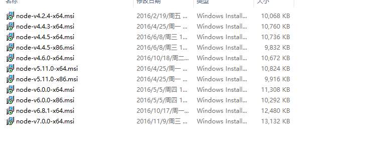
Nodeをインストールする前に、Nodeのインストールディレクトリを選びます。Dドライブにインストールしたいので、Dドライブにnodeというディレクトリを新規作成し、その中に4.42というフォルダーを作成しました。これからこのフォルダーに4.42バージョンのNodeをインストールする予定だからです。
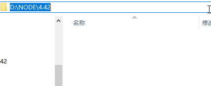
インストール開始:
node4.42のインストーラーを開き、インストールパスが表示されるまで「次へ」をクリックし続けます。
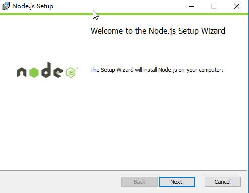
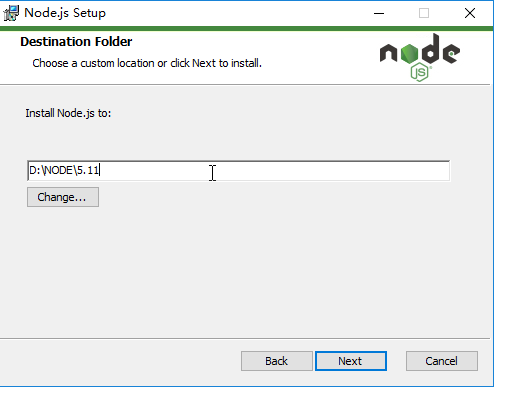
インストールパスを、作成した4.42フォルダーのパスに変更し、そのまま「次へ」と進めていきます。インストールが成功すると、フォルダー内に多くのファイルが現れます。これでNodeがインストール完了です。
中のパスを次のように変更しますD:\node\4.42\
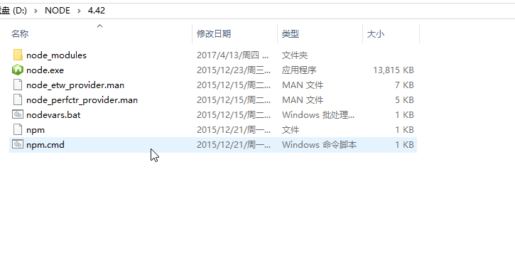
Nodeがインストールされたらすぐに使えるのでしょうか？もちろん違います。環境変数を設定する必要があります。コンピューター=> プロパティ=> システムの詳細設定=> 環境変数
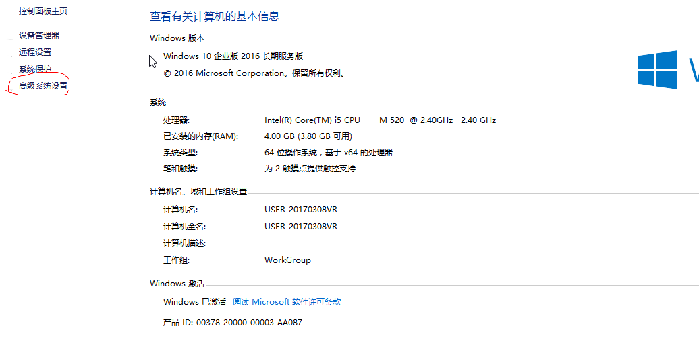
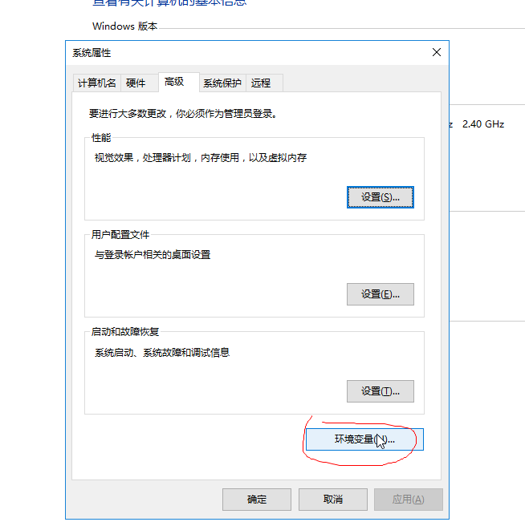

システム環境変数で「新規作成」をクリックし、変数名: node_4.42、変数値は4.42バージョンのインストールディレクトリ、つまりD:\node\4.42\
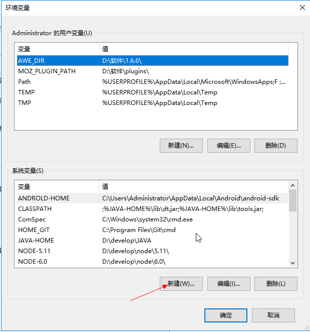
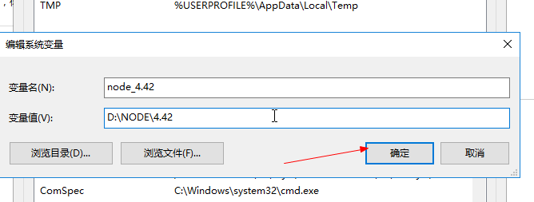
「OK」をクリックしたら、システム環境変数の中から次を見つけます。path変数を選択し、「編集」をクリックします
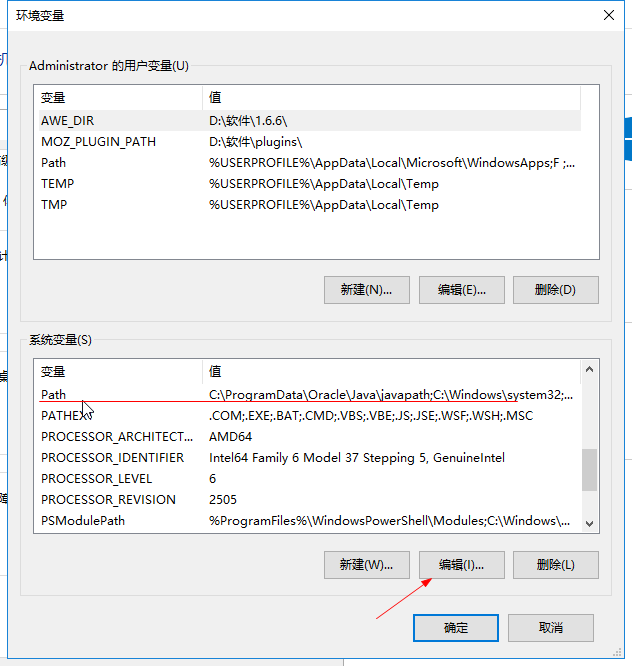
見えましたかpath変数の中の値です。先ほど新規作成した変数をここに追加します。どうやって追加するのでしょうか？ 一対の%％記号、その中間に先ほど新規作成した変数名を書き、pathの最後に置きます。必ず中間の;％記号を忘れないでください。各変数の間にはそれぞれ必要です。;
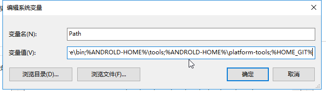
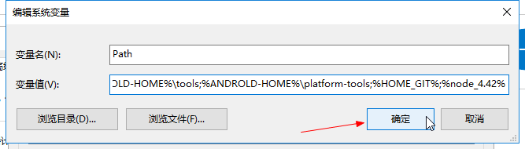
配置したら「OK」をクリックし、それからCMD(Win+R)を押して、入力：
$ node -v
もしバージョン番号が表示されたら、最初のNodeはインストール完了で、正常に使用できます。
複数バージョンのインストール: 最初のインストールが完了したら、2番目のNodeバージョンをインストールします。
新しいバージョンをインストールする前に、まず以前のバージョンのインストールディレクトリを見つける必要があります。つまりD:\node\4.42そして、4.42というフォルダーをリネームします（名前を変更しないと、新しいバージョンをインストールするとき、どこにインストールしても以前のものを上書きしてしまうためです）。
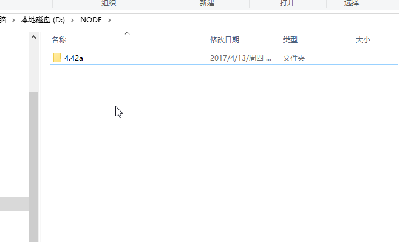
リネーム後、新しいディレクトリを作成します。私は5.11という名前にしました（次に5.11バージョンをインストールする予定だからです）。
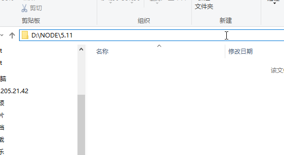
次に5.11のインストールを開始します。手順は上記と同じで、環境変数の設定が完了すれば5.11のインストール完了です。
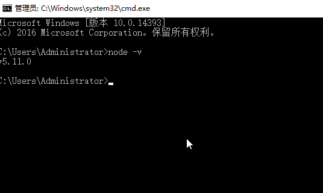
5.11バージョンをインストールしたら、戻って4.42のディレクトリ名を元に戻しましょう。
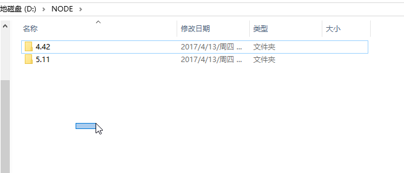
現在、Nodeが2バージョンインストールされているか確認します:where node、および現在使用中のバージョン:node -v
$ where node
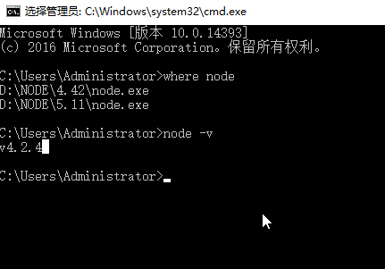
where node で2つ表示されれば、確かに2つのバージョンのNodeがインストールされていることになります。node -v現在使用しているバージョンがどれかを教えてくれます!!!
さらに他のバージョンをインストールしたい場合も方法は同じで、上記の手順に従えばOKです。
もし今多くのNodeをインストール済みでも、現在のNodeバージョンが使いたいものでない場合はどうすればいいでしょうか？ Nodeバージョンを切り替えるにはどうすればいいですか？
環境変数を開き、次を見つけます。path使いたいバージョンのnode変数を、すべてのnode変数の最前に置きます。例えば、以前のpathが%node_4.42%;%node_5.11%なら、4.42バージョンを使っています。もし
5.11のバージョンを使いたいなら、pathの中の%node_4.42%;%node_5.11%に変更します%node_5.11%;%node_4.42%
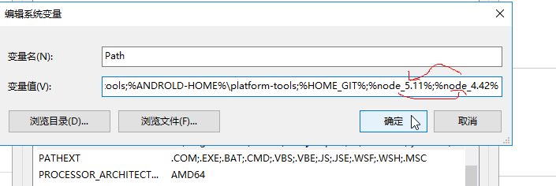
《2 このとき、もう一度見てみましょう：where nodeとnode -v
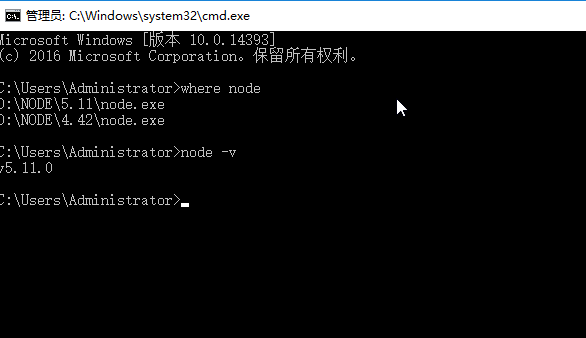
これが、複数バージョンのNodeのインストールとNodeバージョン切り替えの方法です。
原著者：小鳥依家